01Windows 桌面工具
审计文件工具箱 AuditFlow
解决多份表格汇总、分页报表整理和附件转换繁琐的问题。
- 表格合并与金额核对
- 报表清洗与异常检查
- 图片转 PDF 与任务历史
已验证成果
四项工具模拟导出通过。已交付便携版；清洗候选需人工确认，异常结果需复核，尚未进行真实业务验收。
Project_002 · 本机 Windows 11 x64 验收
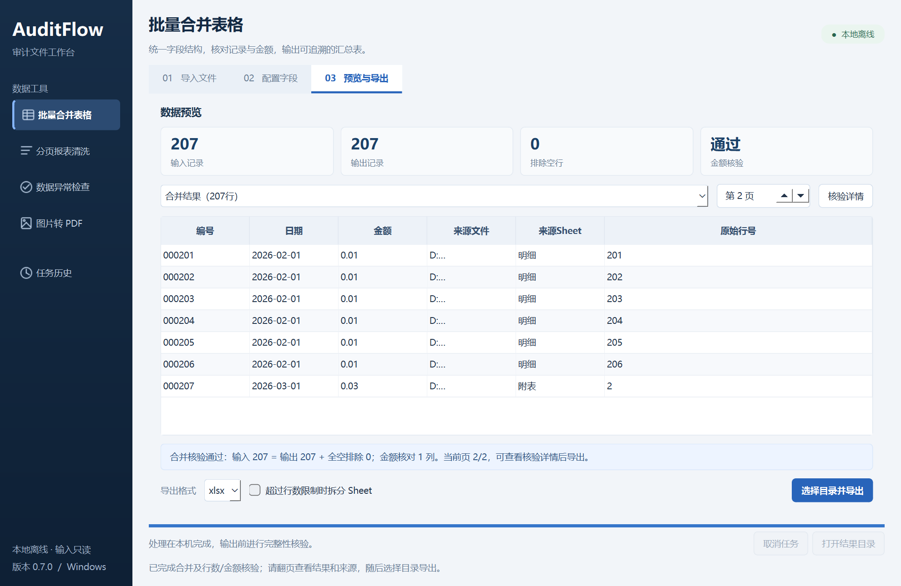
围绕本地 AI 交互、小程序与办公自动化，
借助 AI 完成需求梳理、工具开发和结果核对。
01 / PROJECT COLLECTION
本地可用、演示和阶段成果均收录。
每项标明当前状态与验证边界。
解决多份表格汇总、分页报表整理和附件转换繁琐的问题。
四项工具模拟导出通过。已交付便携版；清洗候选需人工确认，异常结果需复核，尚未进行真实业务验收。
Project_002 · 本机 Windows 11 x64 验收

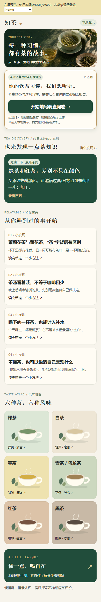
查看完整图 ↗让茶文化问卷、知识阅读和偏好报告集中在一个小程序中。
已有本地功能与自动测试记录，旧版知识页获原生显示确认；新版导图、真机与云端仍待验证，未发布。
Project_013 · 浏览器预览不等于微信验收
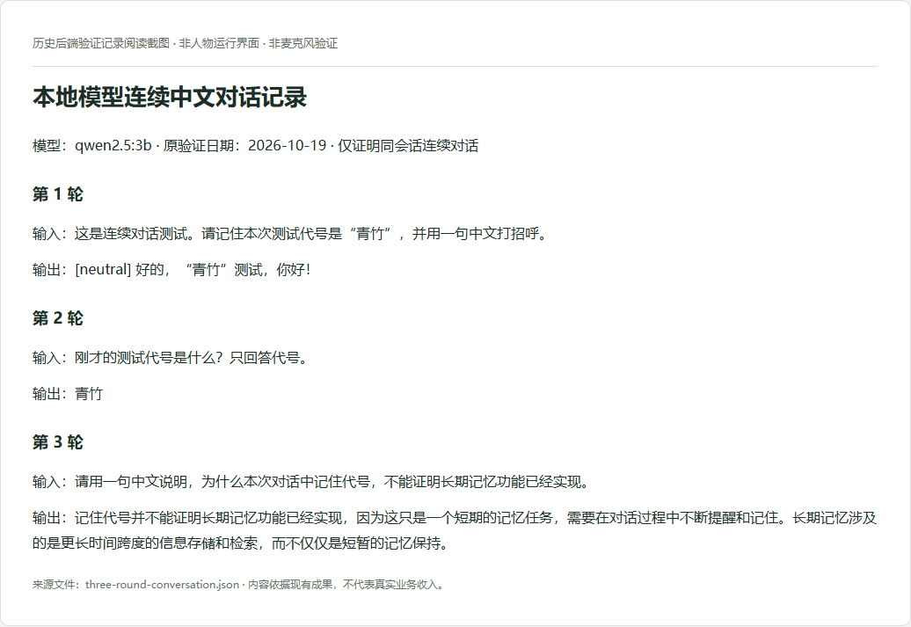
查看完整图 ↗探索可在本机运行的中文数字人交互，减少对付费接口的依赖。
文字对话三轮通过，人物显示获人工确认；合成语音链路有通过记录，真实麦克风未验收，成长助手功能未完成。
Project_014 · 基于 Open-LLM-VTuber 配置与集成
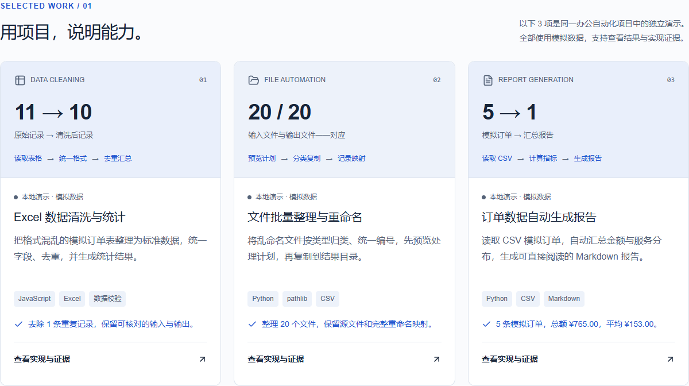
查看完整图 ↗把项目实践、能力方向和证据附件整理为便于浏览的网页。
已有本地构建、内容测试及十项浏览器测试通过记录；邮箱和正式简历仍待补充，未发布公网。
Project_012 · 原有 Next.js 主页，本页独立保留
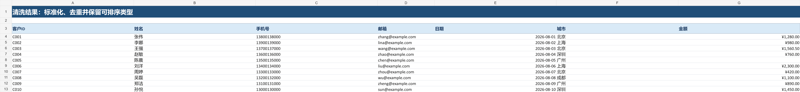
查看完整图 ↗将格式不一且有重复记录的模拟订单整理成统一表格。
已有十一条输入整理为十条输出的记录；工作簿可解析并有渲染图，统计金额为模拟数据，不代表业务收入。
Project_011 · 独立办公演示
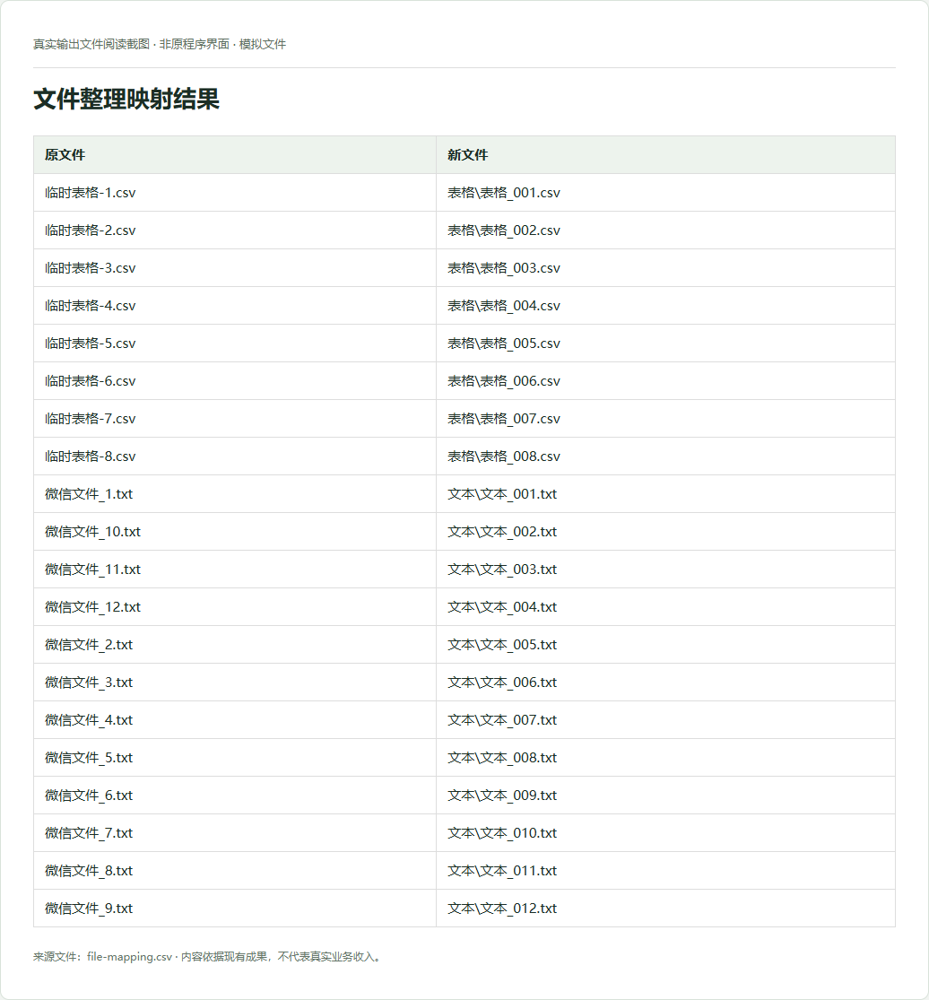
查看完整图 ↗解决文件命名杂乱、手动分类重复的问题。
二十个模拟文件完整复制，逐项哈希一致；映射表包含全部文件，源文件保持不变，仅验证演示样本。
Project_011 · 已在作品集副本复跑
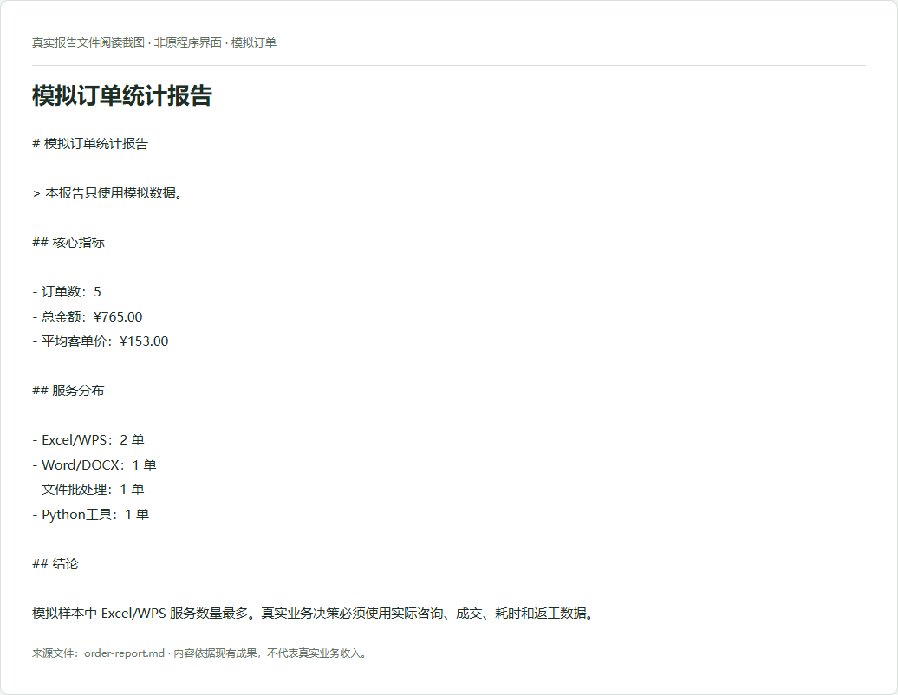
查看完整图 ↗解决手动汇总订单、重复编写统计报告的问题。
五条模拟订单生成报告，总额¥765.00，条数与金额经独立核算一致；数据仅用于演示，不代表真实收入。
Project_011 · 已在作品集副本复跑
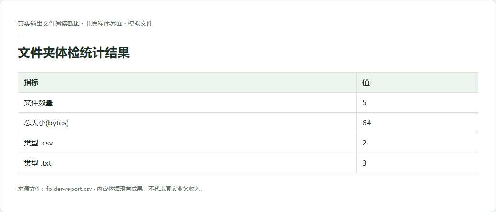
查看完整图 ↗在整理文件前了解指定文件夹的数量、体积和类型分布。
本次在副本运行，五个模拟文件生成统计报告；不重命名、不移动或删除源文件，大型目录耗时仍需实测。
Project_011 · 本次副本复跑通过
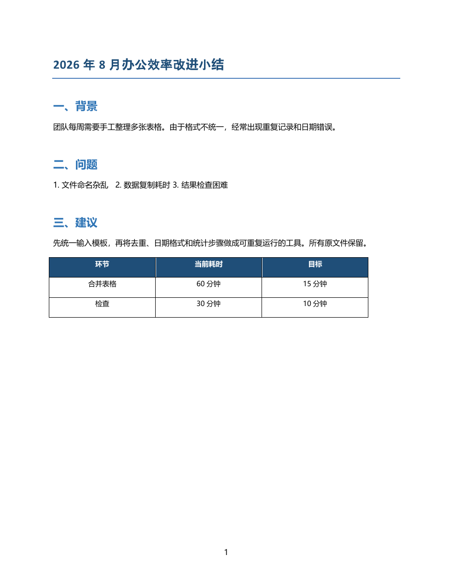
查看完整图 ↗把样式混乱的模拟办公文档整理成统一格式的可编辑文件。
已有可解析的输入与输出DOCX；本次Word渲染并检查全一页，文字与表格可读，示例目标不代表实际节时成果。
Project_011 · Word副本实际渲染，全1页已检查
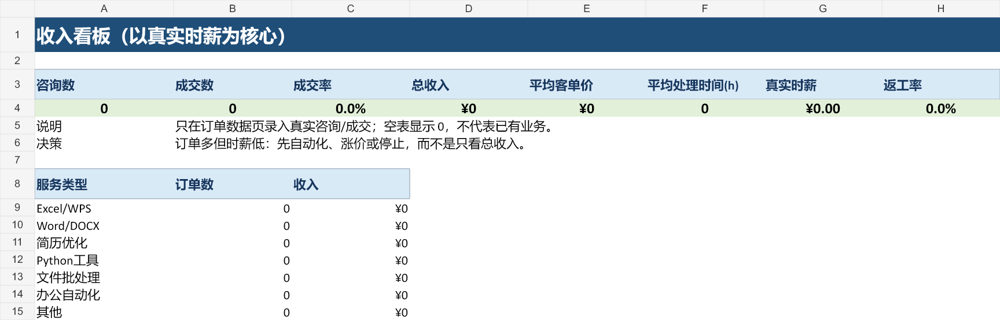
查看完整图 ↗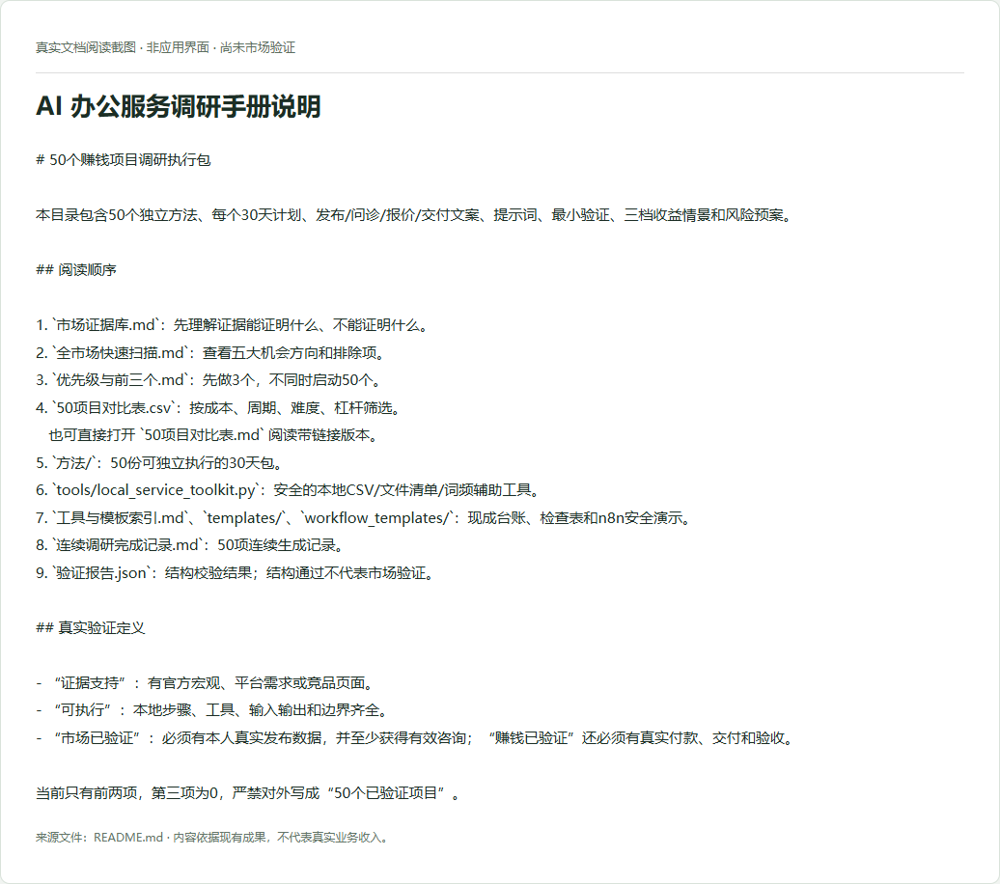
查看完整图 ↗把分散的AI办公服务方向整理为可比较的行动资料。
已有五十份文档与一千五百条日程的结构验证记录；属于研究和行动参考，市场验证未开始，不代表成交或收益。
Project_011 · 研究文档，不是五十个已开发应用
Project_011 内的演示、模板和调研属于同一父项目；阶段成果不代表整体产品完成。所有示例订单、金额和文档均为模拟用途。
02 / TOOLKIT
按任务选工具，也核对 AI 的输出。
03 / CONTACT
欢迎围绕工具使用、项目实践与工作机会交流。